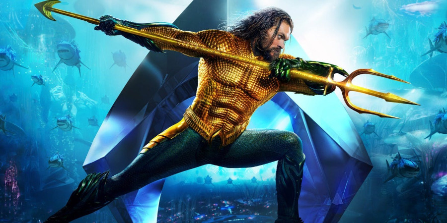

Mert Yalın
Hakkımda
Merhaba. Ben Mert Yalın. İstanbulda yaşıyorum. Namık Kemal Üniversitesi'nde bilgisayar mühendisliği okudum. Uzun yıllar boyunca basketbol oynadım. Boş zamanlarımda da satranç oynamayı ve film izlemeyi severim.
İlgi Alanlarım
- Film
- Dizi
- Spartacus
- Game Of Thrones
- The Walking Dead
- Kitap
Sevdiğim Filmler
Aquaman
Süper kahraman filmlerinden zevk alıyorum. Marvel ve DC evrenleri de bu yüzden vazgeçilmezim. Aquaman de son zamanlarda en çok zevk aldığım film oldu. Kara ile deniz arasındaki savaşı bitiren Aquaman'i siz de izlemelisiniz.

Ironman Film Serisi
Ironman film serisi de tıpkı Aquaman gibi süper fantastik bir film. Zengin bir silah fabrikatörünün onu kaçıranlardan kurtulmak için tasarladığı zırh ile dünyayı değiştirmesini izleyeceksiniz.